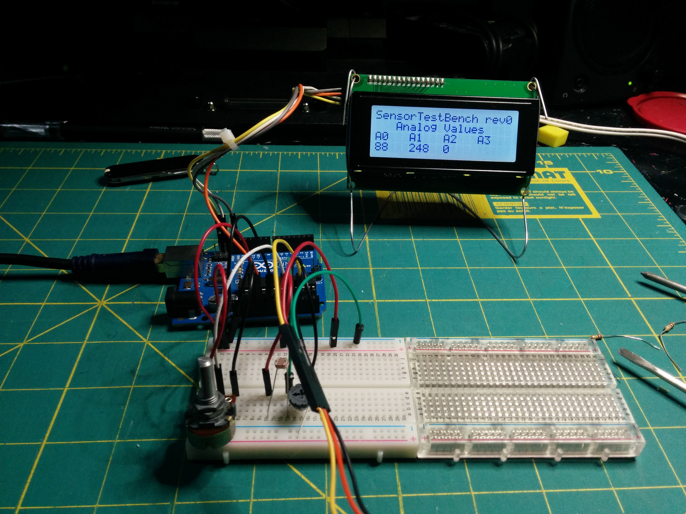

Sensor Test Bench
March 2017 - December 2017
|  |  |
 |
 |
This is another project I worked on for the robotics team. Like the motor test bench, this device is also designed for prototyping. However, rather than control motors, this test bench reads the values from multiple analog and digital sensors and displays them on a screen. The sensor test bench is based on an Arduino Mega. The Arduino reads the data from the sensors and displays it in a readable format on a large monochrome LCD display. The Arduino and display are both powered by a 12V rechargable Li-ion battery pack connected to a dual 5V and 3.3V regulator module. The sensors connect to a flush-mounted set of pin headers, which include a set of pull-up/pull-down resistors (this can be set by flipping a switch also mounted on the panel). Everything is mounted to the inside of a blow-molded plastic case.
The sensor test bench is programmed in Arduino-C. However, it was written using PlatformIO and therefore must also be compiled with it. The code for this project is available on Github.